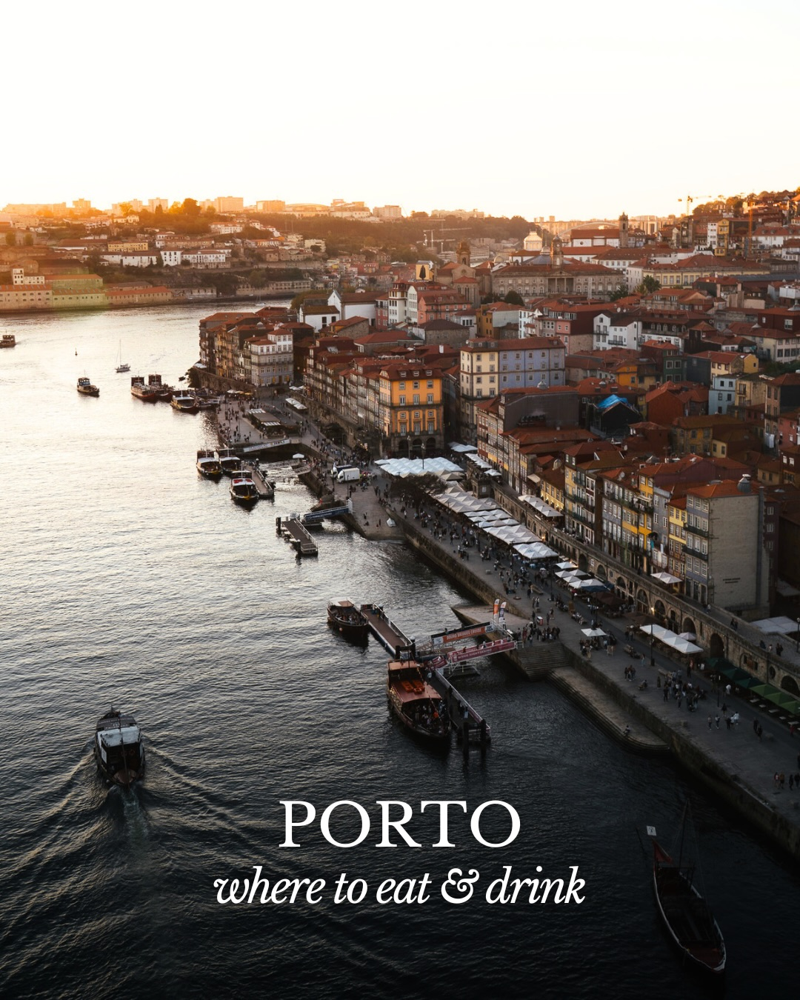
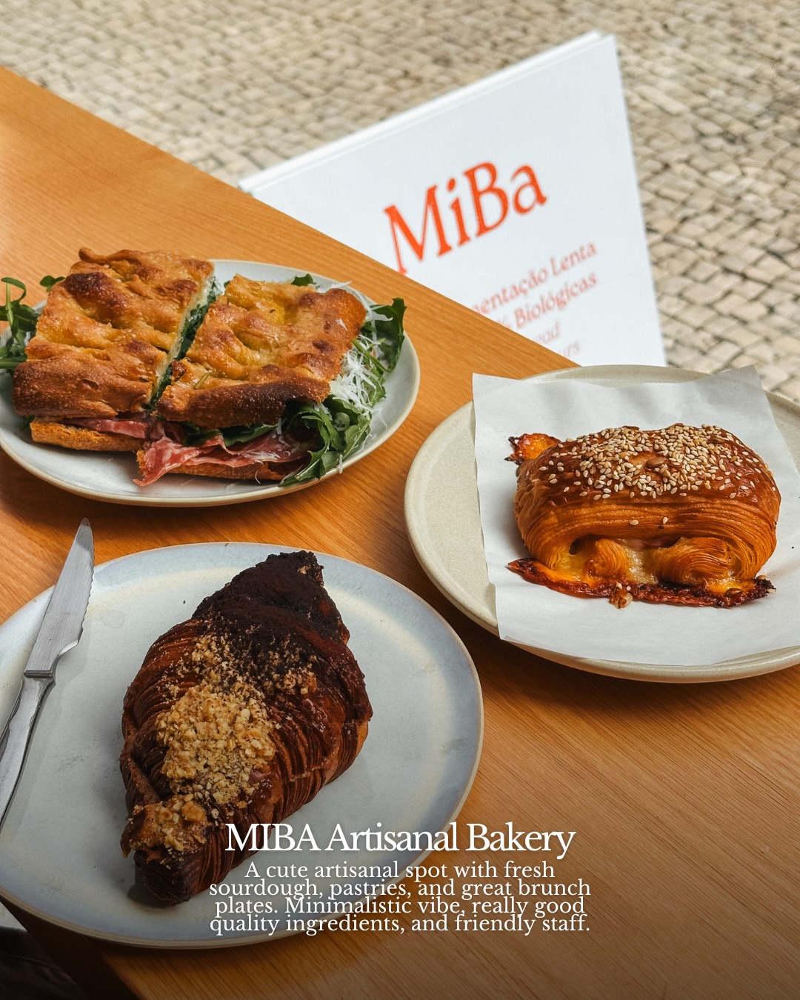
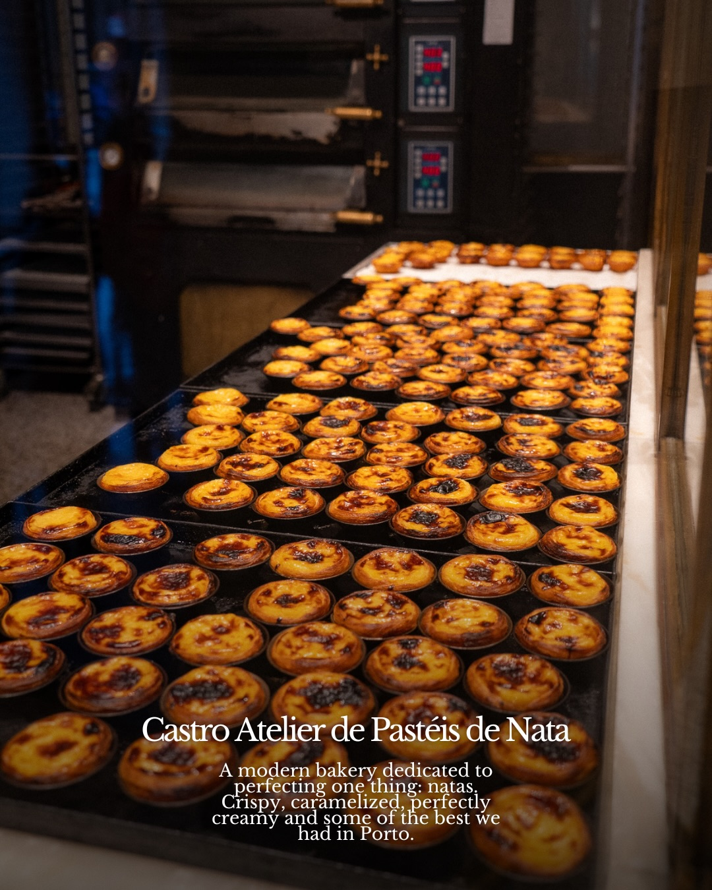
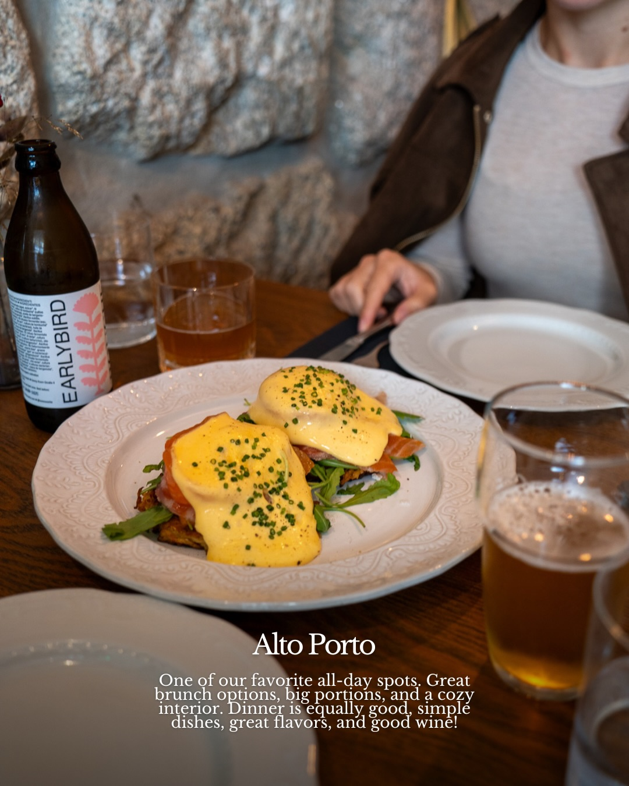
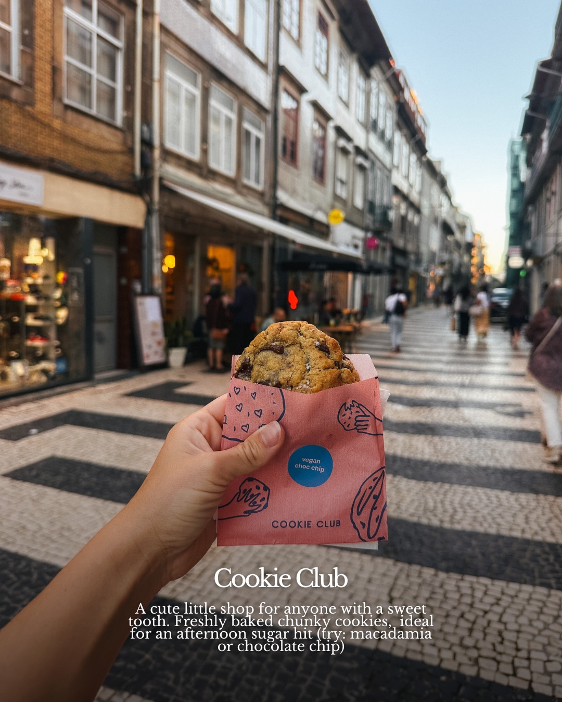
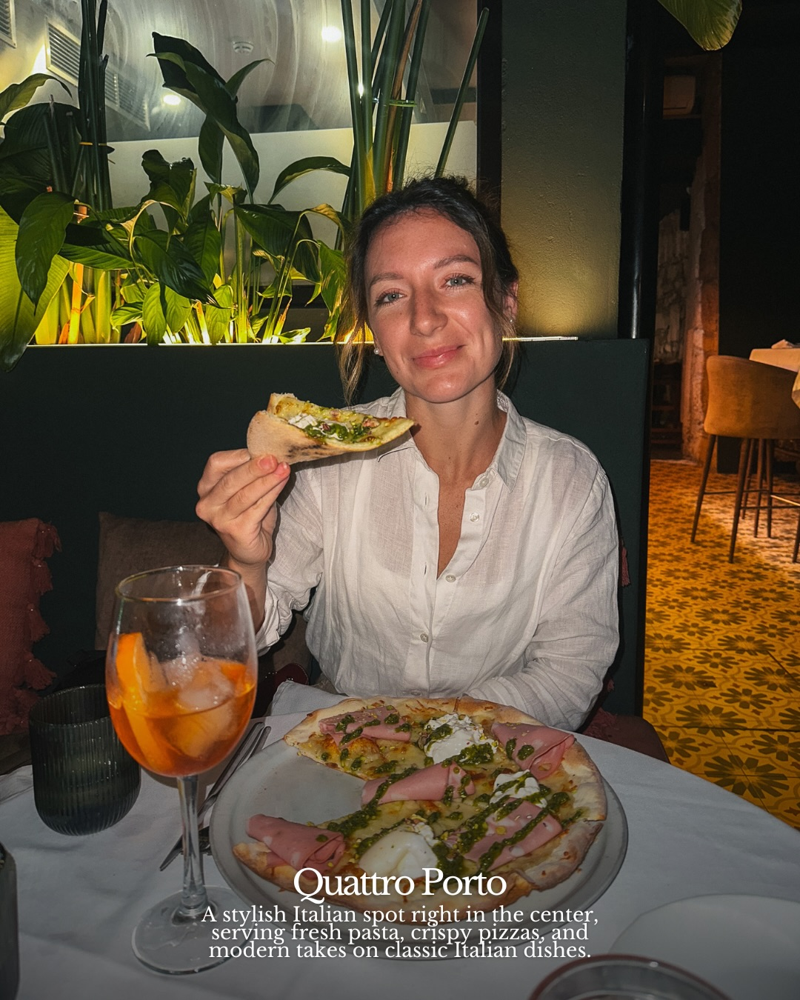
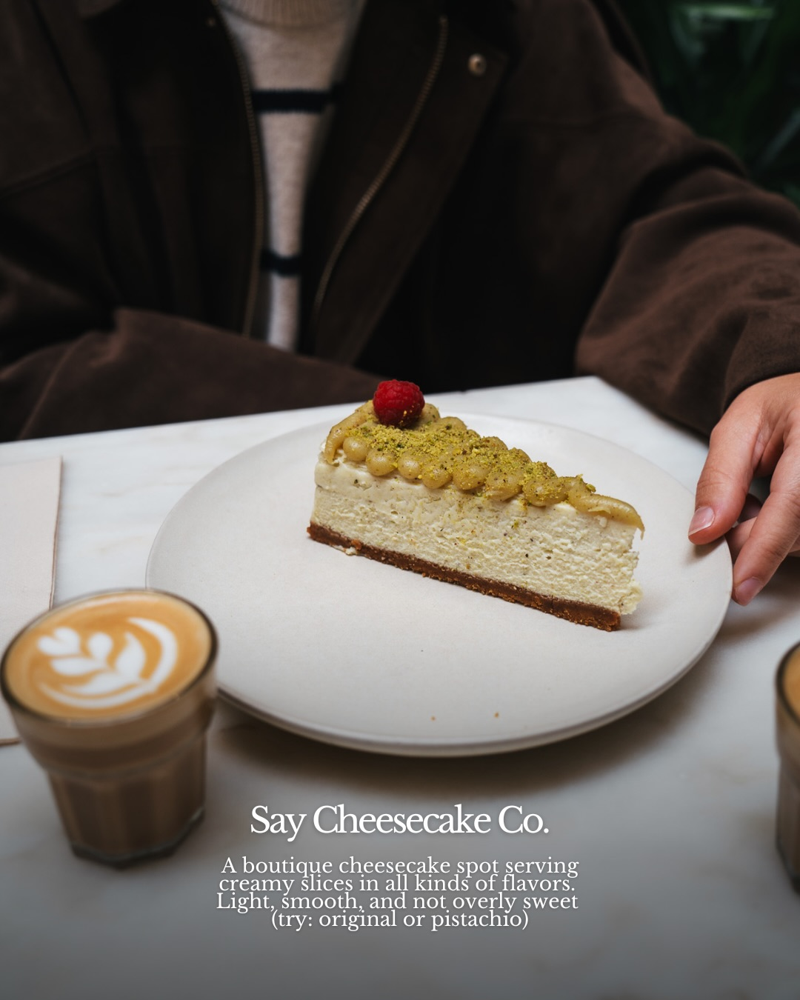
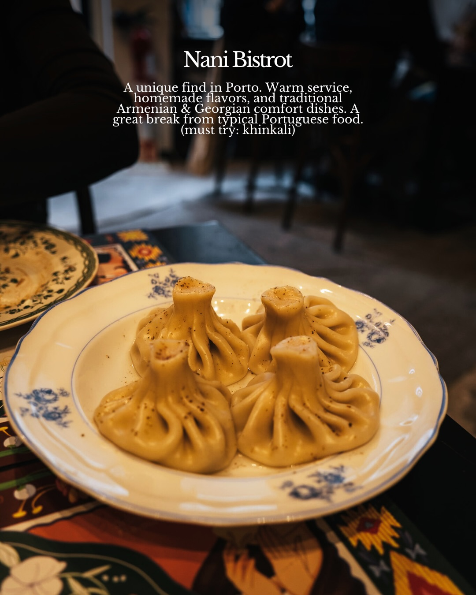
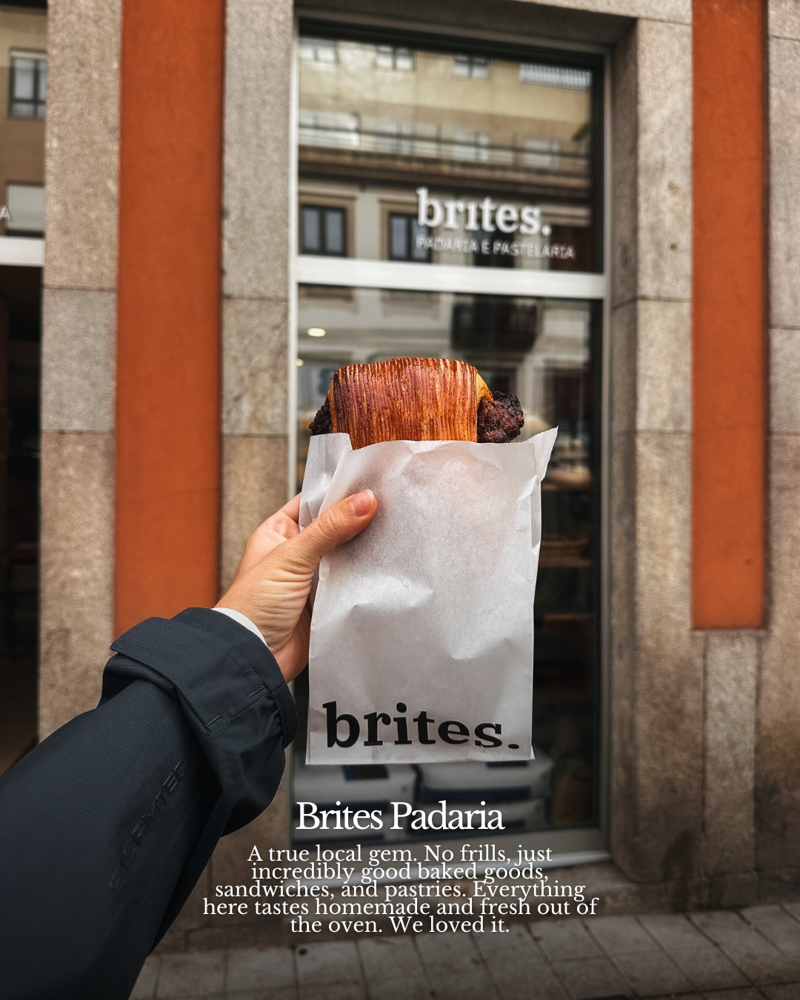

Instagram Post

🇵🇹 We put together a small food & café guide of...
carousel (10 slides) (enriched by ClaudeClaw)
Summary
PORTO where to eat & drink | MiBa entação Lenta Biológicas MIBA Artisanal Bakery A cut... | Castro Atelier de Pastéis de Nata A modern bakery dedicat... | EARLYBIRD Alto Porto One of our favorite all-day spots | vegan choc chip COOKIE CLUB Cookie Club A cute little sho... | Quattro Porto A stylish Italian spot right in the center,... | Say Cheesecake Co | Nani Bistrot A unique find in Porto | b...
Caption
🇵🇹 We put together a small food & café guide of Porto with some of our favourite spots 👀
✨ Comment “douro” and we’ll send you our free Google Maps Guide with some of our favourite spots around Porto- viewpoints, riverside walks, cafés, photo spots, and places that make you slow down and actually feel the city!
Porto honestly surprised us with how good the coffee and food scene is 😅☕️🍽
📍Here are a few places you shouldn’t miss. Some are perfect for a slow sit-down meal, others are quick stops for pastries (Brites Padaria we love you ❤️), snacks, or a good coffee while exploring the city. We hope you try a few, and let us know if you do! 😍
Two words: Porto delivered.
Travelling to Porto soon (or know someone who is)? Save + share this 👉🏼✈️
…and follow @travelcroats for more casual guides & easy itineraries!
📍 @castro_atelier_lisboa
📍 @alto.porto
📍 @nanibistrot
📍 @quattro.ristorante
Porto Food Guide | Porto Cafes | Where to Eat in Porto | Porto Coffee Spots | Porto Bakeries | Porto Restaurants | Portugal Travel Guide | Visit Porto | Porto Hidden Gems | Things to Do in Porto | TravelCroats Porto
1
PORTO where to eat & drink
An aerial view of a city with colorful buildings and red roofs lining a river, with boats on the water and a warm sunset glow in the sky.
2
MiBa entação Lenta Biológicas MIBA Artisanal Bakery A cute artisanal spot with fresh sourdough, pastries, and great brunch plates. Minimalistic vibe, really good quality ingredients, and friendly staff.
Three plates of food, including a focaccia sandwich, a chocolate croissant, and a savory pastry, are arranged on a wooden table next to a book titled "MiBa".
3
Castro Atelier de Pastéis de Nata A modern bakery dedicated to perfecting one thing: natas. Crispy, caramelized, perfectly creamy and some of the best we had in Porto.
A bakery scene shows multiple trays filled with freshly baked Portuguese custard tarts (Pastéis de Nata) in the foreground, with large industrial ovens visible in the background.
4
EARLYBIRD Alto Porto One of our favorite all-day spots. Great brunch options, big portions, and a cozy interior. Dinner is equally good, simple dishes, great flavors, and good wine!
A plate of Eggs Benedict with chives is centered on a wooden table, with a person partially visible across from it, a beer bottle, and glasses of drinks, against a stone wall background.
5
vegan choc chip COOKIE CLUB Cookie Club A cute little shop for anyone with a sweet tooth. Freshly baked chunky cookies, ideal for an afternoon sugar hit (try: macadamia or chocolate chip)
A hand holds a chocolate chip cookie in a pink "Cookie Club" bag, with a blurred European-style pedestrian street lined with shops and people in the background.
6
Quattro Porto A stylish Italian spot right in the center, serving fresh pasta, crispy pizzas, and modern takes on classic Italian dishes.
A smiling woman in a restaurant holds a slice of pizza while a large pizza and an orange cocktail sit on the table in front of her, with plants and dim lighting in the background.
7
Say Cheesecake Co. A boutique cheesecake spot serving creamy slices in all kinds of flavors. Light, smooth, and not overly sweet (try: original or pistachio)
A person in a brown jacket sits at a table with a slice of cheesecake topped with pistachios and a raspberry, and a small glass of latte art coffee.
8
Nani Bistrot A unique find in Porto. Warm service, homemade flavors, and traditional Armenian & Georgian comfort dishes. A great break from typical Portuguese food. (must try: khinkali)
A close-up shot shows four khinkali dumplings on a white plate with blue floral patterns, resting on a colorful patterned tablecloth in a restaurant setting.
9
brites. PADARIA E PASTELARIA brites. Brites Padaria A true local gem. No frills, just incredibly good baked goods, sandwiches, and pastries. Everything here tastes homemade and fresh out of the oven. We loved it.
A person holds a chocolate croissant in a paper bag in front of a storefront with "brites. PADARIA E PASTELARIA" written on its window.
10
Majestic Café One of Porto's most iconic cafés, famous for its Belle Époque interiors and classic Portuguese pastries. Yes, it's touristy, but still worth a quick stop for the experience.
A close-up shot shows a dessert topped with nuts and raisins, drizzled with syrup, on a white plate with a gold rim, next to a fork held by a person's hand, with a cup of coffee visible in the background.
All slides







